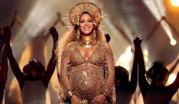
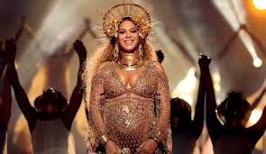

about me
Ariana Grande-Butera is an American singer, songwriter and actress. She began her career in 2008 in the Broadway musical 13, before playing the role of Cat Valentine in the Nickelodeon television series Victorious from 2010 to 2013, and in the spinoff Sam & Cat from 2013 to 2014. Grande made her first musical appearance on the soundtrack for Victorious and was signed to Republic Records in 2011 after music executive Monte Lipman came across one of her YouTube videos covering songs.Grande released her debut album, "Yours Truly" in 2013, which was influenced by 1990s R&B and 1950s doo-wop, and peaked atop the US Billboard 200. Grande ventured into EDM on her second album, "My Everything" (2014), which also topped the US charts and featured four top ten singles on the Billboard Hot 100, the most by any artist in 2014: "Problem", "Break Free", "Bang Bang", and "Love Me Harder". Her third album, "Dangerous Woman" (2016), explored pop and dance, and became her first number-one album in the United Kingdom. She experimented with trap on her next two releases, "Sweetener" (2018) and "Thank U, Next" (2019), with the former winning a Grammy Award for Best Pop Vocal Album, while the latter had largest streaming week ever for a pop album. With the singles "Thank U, Next" , "7 Rings", and "Break Up with Your Girlfriend, I'm Bored", Grande became the first solo artist to hold the top three spots on the Billboard Hot 100 simultaneously, and the second musical act overall after The Beatles in 1964. Grande is also the first artist to have the lead singles from each of their first five studio albums debut within the top-ten on the US charts.
Critics have compared Grande's wide vocal range to that of Mariah Carey. Her accolades include one Grammy Award, one BRIT Award, three American Music Awards, three MTV Europe Music Awards and two MTV Video Music Awards. She has supported a range of charities and has a large following on social media, becoming the most followed woman on Instagram in February 2019. In 2016, Time named Grande as one of the 100 most influential people in the world on their annual list, and in 2018, Billboard named her Woman of the Year.
 
